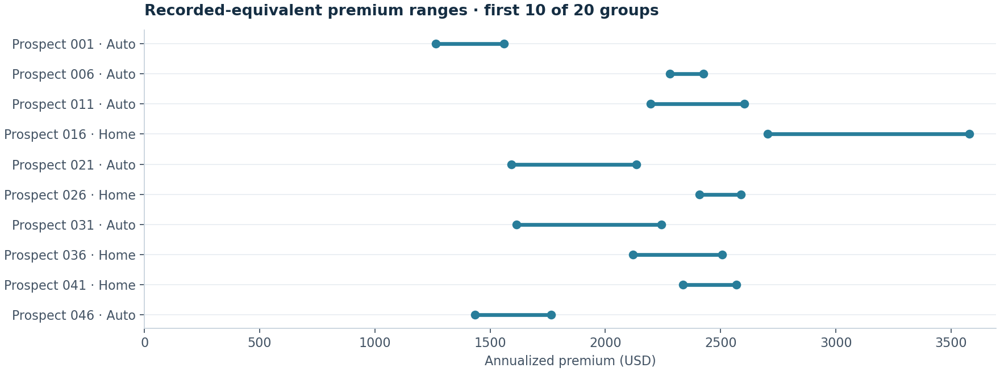

Comparison and QA
2025-09-01 to 2026-08-31 · Snapshot 2026-08-31
Scroll charts sideways for readable labels; exact values are in the expandable data tables.
Groups require the same prospect, product, effective date, expiration date, and entire recorded coverage set—including limits, deductibles and notes. At least two distinct carriers must remain in the selected population.

All statuses are included, so these are historical comparison examples, not currently available offers. Matching recorded fields does not prove actual contract equivalence. Cheapest does not mean best.
Reconciliation by selected population
| filter | quote_count | quoted_prospects | accepted_prospects | accepted_quotes | non_pending_quotes | result |
|---|---|---|---|---|---|---|
| All quotes | 329 | 90 | 42 | 42 | 286 | PASS |
| Fictional Alder | 53 | 53 | 3 | 3 | 46 | PASS |
| Auto | 192 | 52 | 22 | 22 | 167 | PASS |
| 2026-08 | 14 | 5 | 4 | 4 | 12 | PASS |
| No matching rows | 0 | 0 | 0 | 0 | 0 | PASS |
The report shows the full sample. Each selection above was calculated separately in SQL and pandas to check that the quote and prospect counts agree.
Accessible data: all comparable groups
| comparison_group_id | prospect_id | product | quote_count | minimum_usd | maximum_usd | range_usd |
|---|---|---|---|---|---|---|
| 1 | 1 | Auto | 3 | 1,264.18 | 1,560.36 | 296.18 |
| 16 | 6 | Auto | 3 | 2,280.19 | 2,424.48 | 144.29 |
| 27 | 11 | Auto | 3 | 2,196.63 | 2,603.93 | 407.30 |
| 44 | 16 | Home | 3 | 2,705.10 | 3,579.89 | 874.79 |
| 59 | 21 | Auto | 3 | 1,592.16 | 2,134.53 | 542.37 |
| 79 | 26 | Home | 3 | 2,407.27 | 2,586.95 | 179.68 |
| 97 | 31 | Auto | 3 | 1,614.37 | 2,242.82 | 628.45 |
| 116 | 36 | Home | 3 | 2,118.79 | 2,507.64 | 388.85 |
| 131 | 41 | Home | 3 | 2,335.91 | 2,569.32 | 233.41 |
| 148 | 46 | Auto | 3 | 1,434.41 | 1,764.74 | 330.33 |
| 164 | 51 | Home | 3 | 2,948.78 | 3,584.13 | 635.35 |
| 181 | 56 | Auto | 3 | 1,797.02 | 2,121.44 | 324.42 |
| 196 | 61 | Auto | 3 | 1,214.89 | 1,627.43 | 412.54 |
| 214 | 66 | Home | 3 | 2,676.18 | 3,551.12 | 874.94 |
| 232 | 71 | Auto | 3 | 1,882.15 | 2,592.17 | 710.02 |
| 250 | 76 | Home | 3 | 1,995.56 | 2,701.05 | 705.49 |
| 266 | 81 | Auto | 3 | 2,171.65 | 2,506.32 | 334.67 |
| 284 | 86 | Auto | 3 | 1,096.32 | 1,586.84 | 490.52 |
| 298 | 91 | Auto | 3 | 1,468.31 | 1,953.86 | 485.55 |
| 317 | 96 | Auto | 3 | 2,003.42 | 2,348.27 | 344.85 |
Quality notes
Foreign keys, required fields, status values, dates, integer cents and counts pass. Premium extremes are generated within declared product ranges; this is internal consistency, not market-price validation.